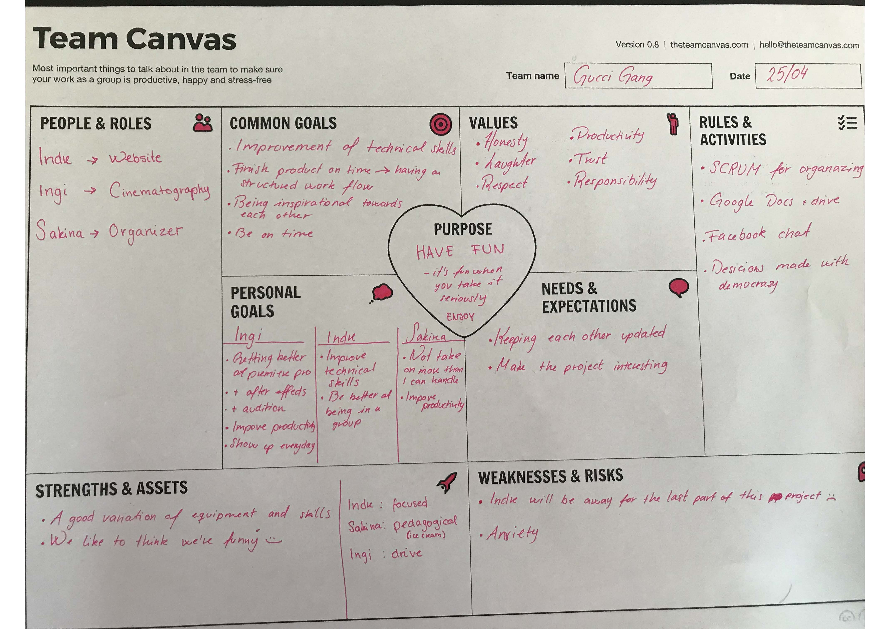
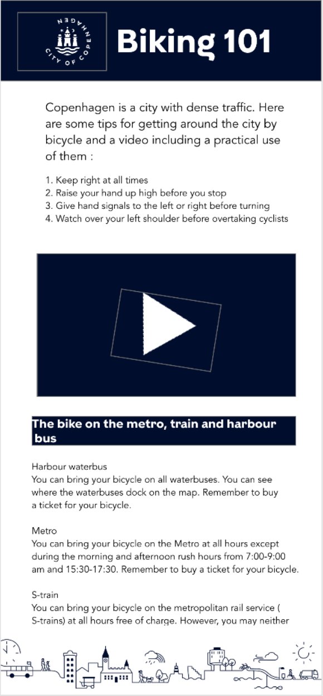
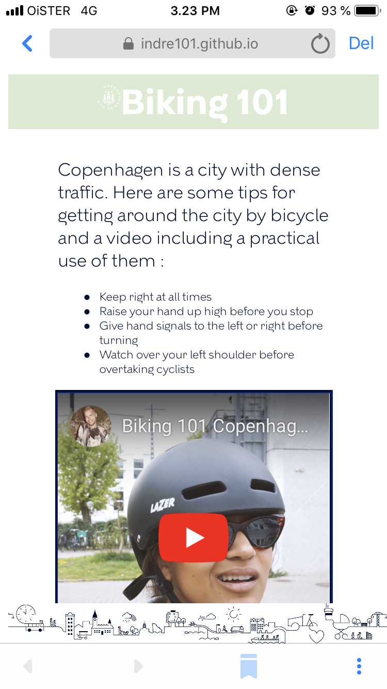
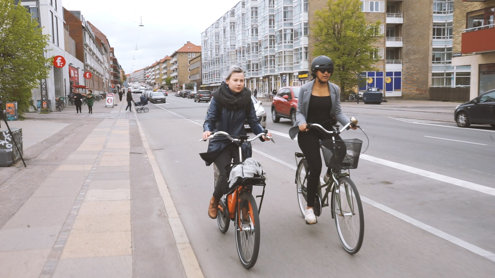

03.02.01
T E A M C A N V A S
1Team_canvas.pdf

What i've learned
When creating a team canvas, information that might seem unimportant or small might be very useful for this particular tool.Initially I found making a team canvas was a waste of time, but when correctly filled out it can be a very strong foundation to refer back to in case of disfunctions within a group.
Luckily the group I was a part of for this project had similar ambitions, skills and time and we didn’t have to refer back to our canvas too much.
What i'd change
For this project I’m actually very satisfied with our team canvas and I’m glad I realized the weight if this tool when starting a teamwork.03.02.03
S T O R Y B O A R D
4Storyboard.pdf


03.02.04 + 03.02.05
X D P R O T O T Y P E & L I N K T O S I T E
XD_prototype_biking_101
Bicycle_101 Copenhagen edition



What i've learned
Making this bicycle guide was such an interesting and fun project.
We were given a case from the real world with a design guide to follow and an objective to fulfill. I learned so much about filming scenes creating storyboards and time management through this.
Creating a storyboard is a task I find very difficult and quite tedious. Which is unfortunate- because its such a crucial part of filming.
What i'd change
Our storyboard was definitely not strong enough and we had to cross our fingers and hope all was well with a lot of shots. So, taking time to do a proper storyboard is something I’d go back and give more attention.